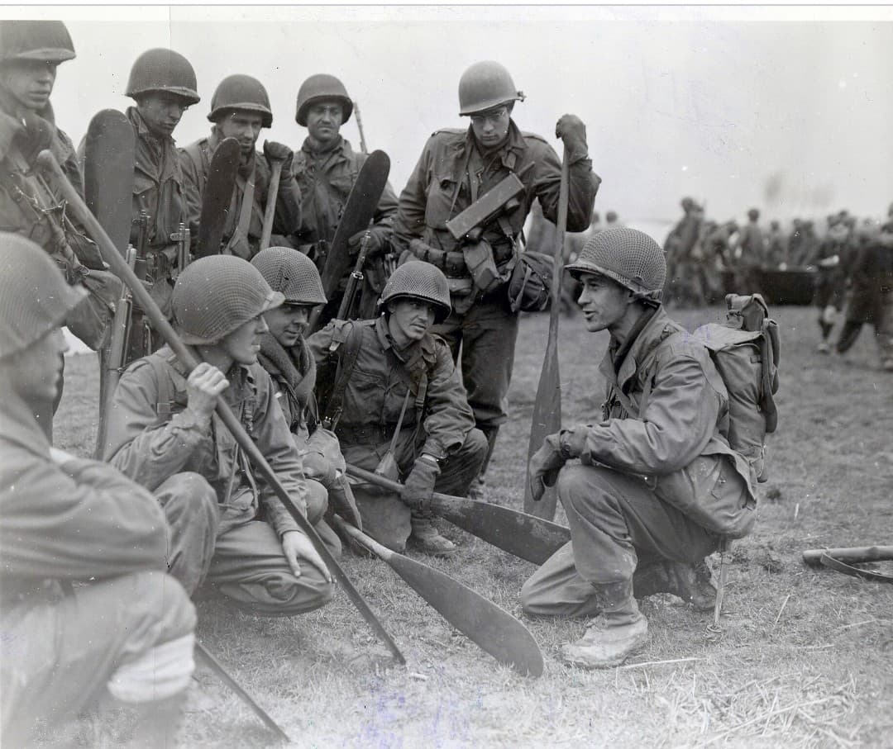
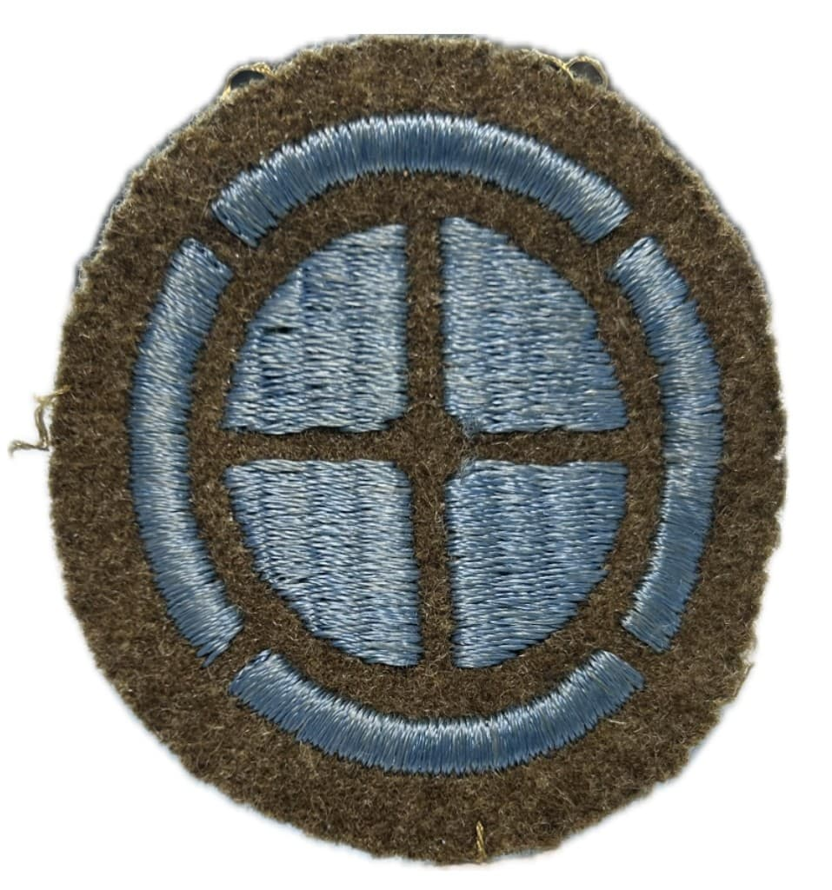
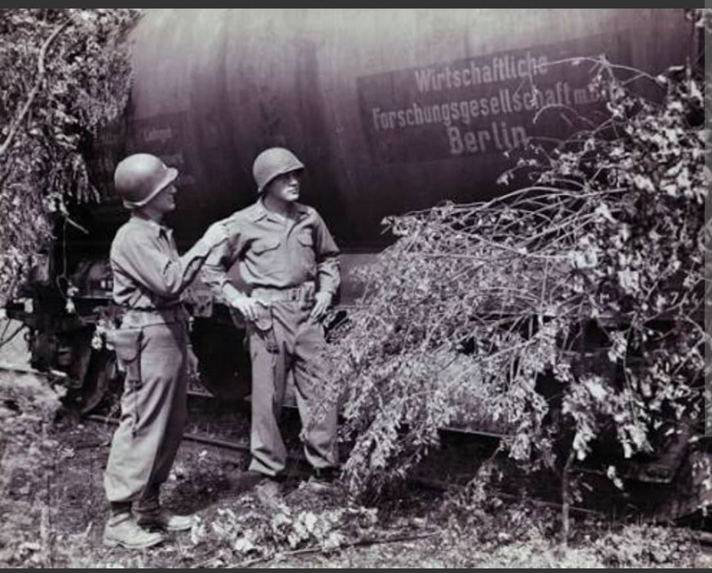

Les héroïques libérateurs de Saint-Lô, les combats en Lorraine et le secours de Bastogne

Surnommée « Santa Fe Division », la **35th Infantry Division** de l'US Army est l'une des unités d'infanterie marquantes de la Third Army du général George S. Patton.
Célèbre pour son rôle capital dans la capture sanglante de la ville stratégique de **Saint-Lô** en juillet 1944, la 35e Division a traversé la France, la Lorraine et la Belgique jusqu'à l'Elbe.
Formée en 1917 par des gardes nationaux du Kansas, du Missouri et du Nebraska, la division prend le nom du célèbre sentier historique de Santa Fe qui traversait ces États. (Note historique : Harry S. Truman servit comme capitaine d'artillerie dans la 35th Division durant la Grande Guerre).
L'insigne circulaire bleu porte une **croix de Santa Fe** blanche entrelacée avec une roue bleue et jaune. Réactivée en décembre 1940, elle est commandée en Europe par le général **Paul W. Baade**.

Débarquée sur Omaha Beach en juillet 1944, la division est jetée dans la guerre des haies face aux parachutistes allemands. Au terme de combats acharnés, elle entre dans les ruines de **Saint-Lô** le 18 juillet 1944, débloquant le front normand.
Rattachée à la 3e Armée de Patton, elle traverse la France et s'illustre en septembre 1944 lors de la **bataille de Nancy**, franchissant la Moselle sous le feu ennemi et libérant la ville.

Pendant la bataille des Ardennes (décembre 1944), la 35th Division attaque au sud du corridor de Bastogne pour secourir la 101st Airborne encerclée, menant de durs combats à Villers-la-Bonne-Eau et Lutrebois.
En 1945, la division franchit la Roer, nettoie le bassin de la Ruhr et progresse jusqu'à Colbitz sur l'Elbe au moment de la capitulation du Reich.
En 264 jours de combat ininterrompu, la 35th Infantry Division enregistre plus de **15 800 pertes au combat** (dont environ 2 480 tués).
Un de ses soldats a reçu la Medal of Honor. La division a capturé plus de 30 000 prisonniers de guerre allemands.
Page du Musée HOP WW2 – Section Unités & Divisions Célèbres